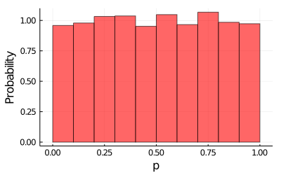
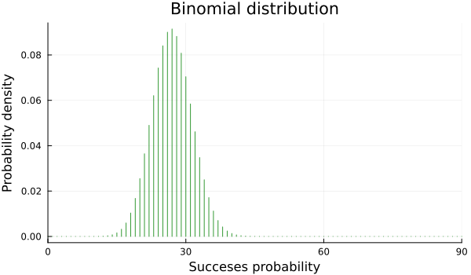
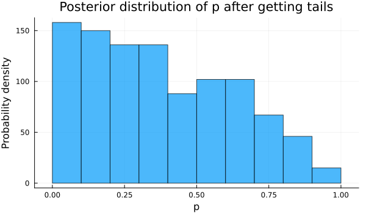
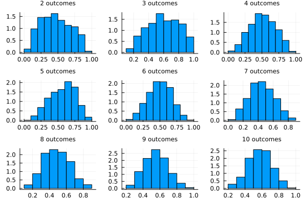
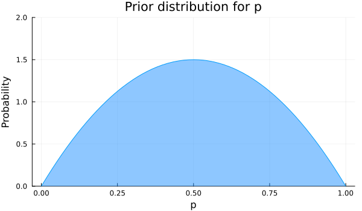
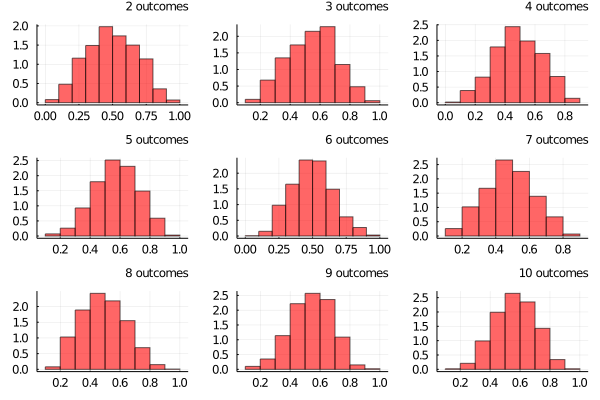
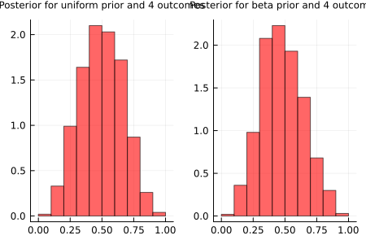

Chapter 5 Probabilistic programming
In the previous chapters we introduced some of the basic mathematical tools we are going to make use of throughout the book. We talked about histograms, probability, probability distributions and the Bayesian way of thinking.
We will start this chapter by discussing the fundamentals of another useful tool, that is, probabilistic programming, and more specifically, how to apply it using probabilistic programming languages or PPLs. These are systems, usually embedded inside a programming language, that are designed for building and reasoning about Bayesian models. They offer scientists an easy way to define probability models and solving them automatically.
In Julia, there are a few PPLs being developed, and we will be using two of them, Turing.jl and Soss.jl. We will be focusing on some examples to explain the general approach when using this tools.
5.1 Coin flipping example
Let’s revisit the old example of flipping a coin, but from a Bayesian perspective, as a way to lay down some ideas.
So the problem goes like this: Suppose we flip a coin N times, and we ask ourselves some questions like: - Is getting heads as likely as getting tails? - Is our coin biased, preferring one output over the other?
To answer these questions we are going to build a simple model, with the help of Julia libraries that add PPL capabilities.
Let’s start thinking in a Bayesian way. The first thing we should ask ourselves is: Do we have any prior information about the problem? Since the plausibility of getting heads is formally a probability (let’s call it \(p\)), we know it must lay between 0 and 1.
Do we know anything more?
Let’s skip that question for the moment and suppose we don’t know anything more about \(p\). This total uncertainty is also some kind of information we can incorporate in our model.
How?
Because we can assign equal probability for each value of \(p\) between 0 and 1, while assigning 0 probability for the remaining values. This just means we don’t know anything and that every outcome is equally possible. Translating this into a probability distribution, it means that we are going to use a uniform prior distribution for \(p\), and the domain of this function will be between 0 and 1.
Do we know anything else? Let’s skip that question for the moment and suppose we don’t know anything else about \(p\). This complete uncertainty also constitutes information we can incorporate into our model. How so? Because we can assign equal probability to each value of \(p\) while assigning 0 probability to the remaining values. This just means we don’t know anything and that every outcome is equally likely. Translating this into a probability distribution, it means that we are going to use a uniform prior distribution for \(p\), and the function domain will be all numbers between 0 and 1.
begin
p_prior_values = rand(Uniform(0, 1), 10000)
plot(p_prior_values, seriestype = :histogram, normalized=true, bins=10, legend=false, size=(400, 250), alpha=0.6, color="red")
ylabel!("Probability")
xlabel!("p")
end
So how do we model the outcomes of flipping a coin?
Well, if we search for some similar type of experiment, we find that all processes in which we have two possible outcomes –heads or tails in our case–, and some probability \(p\) of success –probability of heads–, these are called Bernoulli trials. The experiment of performing a number \(N\) of Bernoulli trials, gives us the so called binomial distribution. For a fixed value of \(N\) and \(p\), the Bernoulli distribution gives us the probability of obtaining different number of heads (and tails too, if we know the total number of trials and the number of times we got heads, we know that the remaining number of times we got tails). Here, \(N\) and \(p\) are the parameters of our distribution.
N = 90
p = 0.3begin
bar(Binomial(N,p), xlim=(0, 90), label=false, xlabel="Succeses", ylabel="Probability", title="Binomial distribution", color="green", alpha=0.8, size=(500, 350))
end
So, as we said, we are going to assume that our data (the count number of heads) is generated by a binomial distribution. Here, \(N\) will be something we know. We control how we are going to make our experiment, and because of this, we fix this parameter. The question now is: what happens with \(p\)? Well, this is actually what we want to estimate! The only thing we know until now is that it is some value from 0 to 1, and every value in that range is equally likely to apply.
When we perform our experiment, the outcomes will be registered and in conjunction with the Bernoulli distribution we proposed as a generator of our data, we will get our Likelihood function. This function just tells us, given some chosen value of \(p\), how likely it is that our data is generated by the Bernoulli distribution with that value of \(p\). How do we choose \(p\)? Well, actually we don’t. You just let randomness make it’s choice. But there exist multiple types of randomness, and this is where our prior distribution makes its play. We let her make the decision, depending on it’s particular randomness flavor. Computing the value of this likelihood function for a big number of \(p\) samples taken from our prior distribution, gives us the posterior distribution of \(p\) given our data. This is called sampling, and it is a very important concept in Bayesian statistics and probabilistic programming, as it is one of the fundamental tools that makes all the magic under the hood. It is the method that actually lets us update our beliefs. The general family of algorithms that follow the steps we have mentioned are named Markov chain Monte Carlo (MCMC) algorithms. The computing complexity of these algorithms can get very high as the complexity of the model increases, so there is a lot of research being done to find intelligent ways of sampling to compute posterior distributions in a more efficient manner.
The model coinflip is shown below. It is implemented using the Turing.jl library, which will be handling all the details about the relationship between the variables of our model, our data and the sampling and computing. To define a model we use the macro @model previous to a function definition as we have already done. The argument that this function will recieve is the data from our experiment. Inside this function, we must write the explicit relationship of all the variables involved in a logical way.
Stochastic variables –variables that are obtained randomly, following a probability distribution–, are defined with a ‘~’ symbol, while deterministic variables –variables that are defined deterministically by other variables–, are defined with a ‘=’ symbol.
begin
@model coinflip(y) = begin
# Our prior belief about the probability of heads in a coin.
p ~ Uniform(0, 1)
# The number of observations.
N = length(y)
for n in 1:N
# Heads or tails of a coin are drawn from a Bernoulli distribution.
y[n] ~ Bernoulli(p)
end
end;
endcoinflip receives the N outcomes of our flips, an array of length N with 0 or 1 values, 0 values indicating tails and 1 indicating heads. The idea is that with each new value of outcome, the model will be updating its beliefs about the parameter \(p\) and this is what the for loop is doing: we are saying that each outcome comes from a Bernoulli distribution with a parameter \(p\), a success probability, shared for all the outcomes.
Suppose we have run the experiment 10 times and had the outcomes:
outcome = [0, 1, 1, 0, 1, 0, 0, 1, 1, 1]## 10-element Array{Int64,1}:
## 0
## 1
## 1
## 0
## 1
## 0
## 0
## 1
## 1
## 1So, we got 6 heads and 4 tails.
Now, we are going to see now how the model, for our unknown parameter \(p\), is updated. We will start by giving only just one input value to the model, adding one input at a time. Finally, we will give the model all outcomes values as input.
begin
# Settings of the Hamiltonian Monte Carlo (HMC) sampler.
iterations = 1000
ϵ = 0.05
τ = 10
# Start sampling.
chain = sample(coinflip(outcome[1]), HMC(ϵ, τ), iterations, progress=false);
end;So now we plot below the posterior distribution of \(p\) after our model updated, seeing just the first outcome, a 0 value or a tail.
How this single outcome affected our beliefs about \(p\)?
We can see in the plot below, showing the posterior or updated distribution of \(p\), that the values of \(p\) near to 0 have more probability than before, recalling that all values had the same probability, which makes sense if all our model has seen is a failure, so it lowers the probability for values of \(p\) that suggest high rates of success.
begin
p_summary = chain[:p]
plot(p_summary, seriestype = :histogram, normed=true, legend=false, size=(500, 250), color="purple", alpha=0.7)
title!("Posterior distribution of p after getting tails")
ylabel!("Probability")
xlabel!("p")
end
Let’s continue now including the remaining outcomes and see how the model is updated. We have plotted below the posterior probability of \(p\) adding outcomes to our model updating its beliefs.
begin
samples = []
for i in 2:10
global chain_
chain_ = sample(coinflip(outcome[1:i]), HMC(ϵ, τ), iterations, progress=false)
push!(samples, chain_[:p])
end
end;begin
plots = histogram.(samples, normalized=true, legend=false, bins=10);
p_ = plot(plots[1], plots[2], plots[3], plots[4], plots[5], plots[6], plots[7],plots[8], plots[9], layout = 9 , title = ["$i outcomes" for j in 1:1, i in 2:10], titleloc = :right, titlefont = font(8))
end
We see that with each new value the model believes more and more that the value of \(p\) is far from 0 or 1, because if it was the case we would have only heads or tails. The model prefers values of \(p\) in between, being the values near 0.5 more plausible with each update. What if we wanted to include more previous knowledge about the success rate \(p\)?
Let’s say we know that the value of \(p\) is near 0.5 but we are not so sure about the exact value, and we want the model to find the plausibility for the values of \(p\). Then including this knowledge, our prior distribution for \(p\) will have higher probability for values near 0.5, and low probability for values near 0 or 1. Searching again in our repertoire of distributions, one that fulfills our wishes is a beta distribution with parameters α=2 and β=2. It is plotted below.
begin
plot(Beta(2,2), fill=(0, .5,:dodgerblue), ylim=(0,2), legend=false, size=(450, 300))
xlabel!("p")
ylabel!("Probability")
title!("Prior distribution for p")
end
Now we define again our model just changing the distribution for \(p\), as shown:
begin
@model coinflip_beta_prior(y) = begin
# Our prior belief about the probability of heads in a coin.
p ~ Beta(2, 2)
# The number of observations.
N = length(y)
for n in 1:N
# Heads or tails of a coin are drawn from a Bernoulli distribution.
y[n] ~ Bernoulli(p)
end
end;
endRunning the new model and plotting the posterior distributions, again adding one observation at a time, we see that with less examples we have a better approximation of \(p\).
begin
samples_beta_prior = []
for i in 2:10
global chain__
chain__ = sample(coinflip_beta_prior(outcome[1:i]), HMC(ϵ, τ), iterations, progress=false)
push!(samples_beta_prior, chain__[:p])
end
end;begin
plots_ = histogram.(samples_beta_prior, normalized=true, legend=false, bins=10, color="red", alpha=0.6);
p__ = plot(plots_[1], plots_[2], plots_[3], plots_[4], plots_[5], plots_[6], plots_[7], plots_[8], plots_[9], layout = 9, title = ["$i outcomes" for j in 1:1, i in 2:10], titleloc = :right, titlefont = font(8))
end
To illustrate the affirmation made before, we can compare for example the posterior distributions obtained only with the first 4 outcomes for both models, the one with a uniform prior and the other with the beta prior. The plots are shown below. We see that some values near 0 and 1 have still high probability for the model with a uniform prior for p, while in the model with a beta prior the values near 0.5 have higher probability. That’s because if we tell the model from the beginning that \(p\) near 0 and 1 have less probability, it catches up faster that probabilities near 0.5 are higher.
plot(plots[3], plots_[3], title = ["Posterior for uniform prior and 4 outcomes" "Posterior for beta prior and 4 outcomes"], titleloc = :center, titlefont = font(8), layout=2, size=(450, 300))
So in this case, incorporating our beliefs in the prior distribution we saw the model reached faster the more plausible values for \(p\), needing less outcomes to reach a very similar posterior distribution. When we used a uniform prior, we were conservative, meaning that we said we didn’t know anything about \(p\) so we assign equal probability for all values. Sometimes this kind of distribution (uniform distributions), called a non-informative prior, can be too conservative, being in some cases not helpful at all. They even can slow the convergence of the model to the more plausible values for our posterior, as shown.
5.2 Summary
In this chapter, we gave an introduction to probabilistic programming languages and explored the classic coin flipping example in a Bayesian way.
First, we saw that in this kind of Bernoulli trial scenario, where the experiment has two possible outcomes 0 or 1, it is a good idea to set our likelihood to a binomial distribution. We also learned what sampling is and saw why we use it to update our beliefs. Then we used the Julia library Turing.jl to create a probabilistic model, setting our prior probability to a uniform distribution and the likelihood to a binomial one. We sampled our model with the Markov chain Monte Carlo algorithm and saw how the posterior probability was updated every time we input a new coin flip result.
Finally, we created a new model with the prior probability set to a normal distribution centered on \(p\) = 0.5 which gave us more accurate results.
5.3 References
5.4 Give us feedback
This book is currently in a beta version. We are looking forward to getting feedback and criticism:
- Submit a GitHub issue here.
- Mail us to martina.cantaro@lambdaclass.com
Thank you!